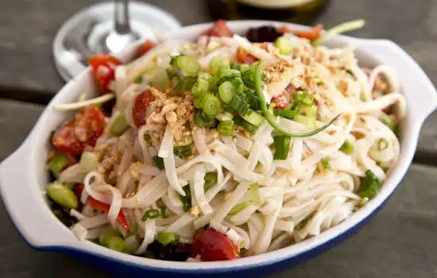

Thai Noodle Salad
This easy to make, refreshing and healthy Thai style Noodle Salad is perfect for lunch or dinner.
Preparation time
- Total: Approximately 60 minutes
- Preparation: 25 minutes
Ingredients
- Pasta (or Cellophane/Rice Noodles) 250 gms Oil 3 tsp
- Carrot 1, chopped or sliced Red Capsicum 1 cup, chopped or sliced
- Shiitake Mushrooms 3/4 cup, sliced
- Cherry (or Sundried) Tomatoes 1 cup, chopped
- For the Dressing: Lime Zest 1 tsp, grated Lime Juice 2 tblsp Rice Vinegar 3/4 tblsp Oil 1 1/2 tsp Coconut Milk 1/2 cup, unsweetened Coriander Leaves 3 tsp, chopped Spring Onion 1, chopped Garlic 1 clove, chopped Coriander Powder 1/3 tsp Salt as per taste Brown Sugar 3 tsp
Instructions
- step1: Cook the pasta in a pan of salted hot water until al dente. Drain well and transfer to a large bowl. .
- step2: Heat oil in a pan. Saute the carrots for a minute. Add the capsicum and mushrooms. Cook for 2 to 3 minutes.
- step3: Add 3 tsp of water, cover the pan and cook until the vegetables are tender, about a minute. Combine and puree all the ingredients for dressing until smooth. Add the vegetables and the dressing to the pasta.
- step4(enjoy): Mix well and keep aside for 10 to 15 minutes. Garnish with spring onions, coriander leaves, peanuts and red chilli flakes
Nutrition
The table below shows nutritional values per serving without the additional fillings.
| Calories | 330kcal |
|---|---|
| Carbs | 50g |
| Protein | 18g |
| Fat | 7g |